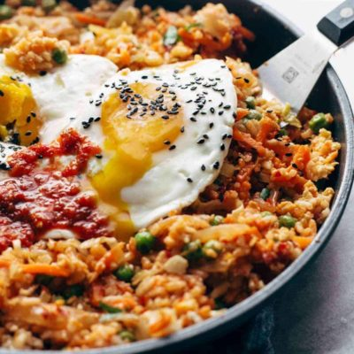
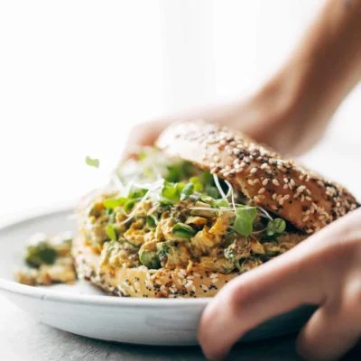
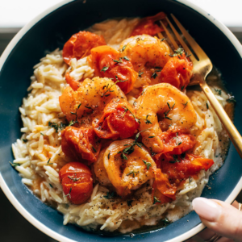

|
Chicken WontonBig, beautiful, bossy flavors ahead! Shiitake mushrooms and chicken wontons swim in a brothy flavor-filled sauce and get finished with a swirl of sesame oil and chili crisp on top. Click here to get the Recipe. |

|
Grilled ChimichurriThese Grilled Chimichurri Portobellos are OUT OF THIS WORLD. Marinated in a punchy and vibrant chimichurri before heading to the grill, then served on top of a mountain of creamy goat cheese mashed potatoes. Click here to get the Recipe. |
|  |
Kimchi Fried Rice in PanKimchi Fried Rice FTW! Cauliflower rice, frozen peas and carrots, fresh garlic and ginger, soy sauce, chili paste, a forkful of kimchi, and finished with a runny yolk waterfall. Click here to get the Recipe. |
|  |
Curry Chicken SaladThis Curry Chicken Salad is super clean and SO delicious. Loaded with spiced chicken, golden raisins, pistachios, herbs, and Greek yogurt + olive oil as a stand-in for mayo. Click here to get the Recipe. |
|  |
Garlic Shrimp and TomatoesShrimp laced with buttery garlic and thyme and a burst tomato sauce served on a creamy Parmesan orzo. Click here to get the Recipe. |